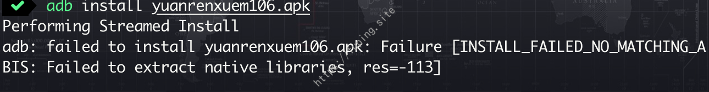
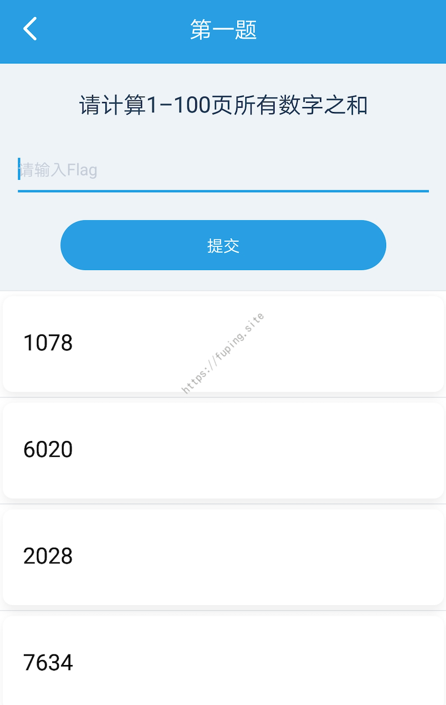
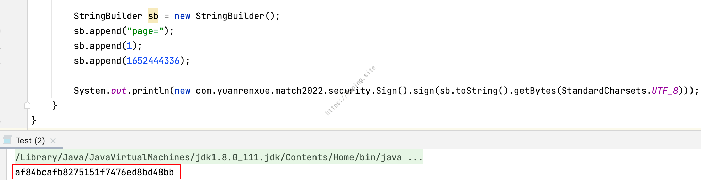
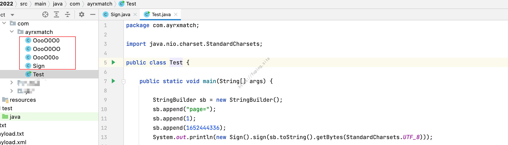
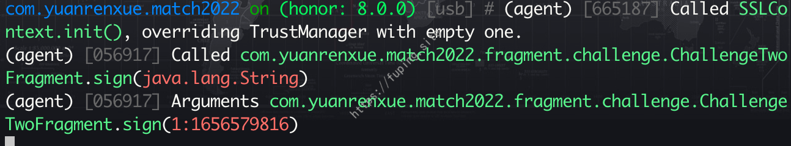
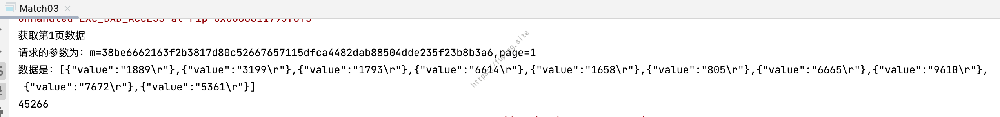
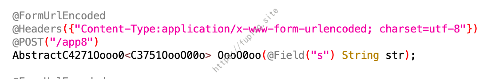
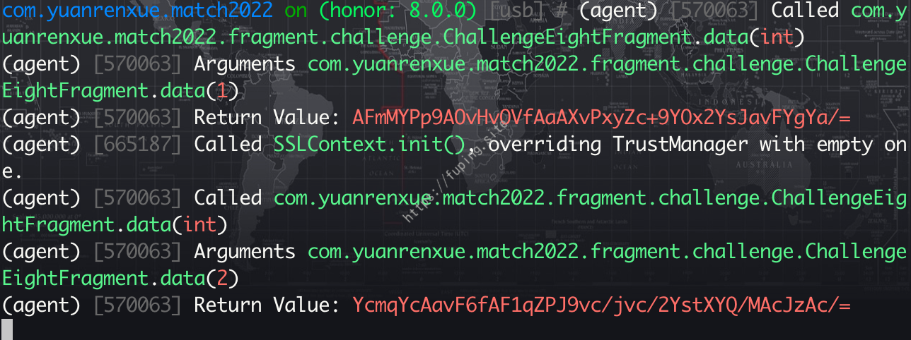

记一次APP爬虫比赛
0x01 前言
5月中旬的时候，猿人学举行了一个APP爬虫大赛，共设10题，主要涉及Android反混淆，双向认证，tls指纹对抗等技术。而且只需要答对一题就有参与奖，即可获得一件猿人学定制T恤。另外第一题不涉及so，仅涉及java层加密。为了T恤，立马去报了名参赛。
0x02答题
比赛开始的时候，想着下载完APP，然后冲完第一题就完事，但结果发现APP安装都成问题。

查看规则才知道，参赛的APP只支持arm64架构的手机，我的Nexus 5根本不支持。还好身边有一个marry大佬尊贵的荣耀8，成功安装了APP。
但是又出现了另外的问题，由于手机是安卓版本8.0，也没有root，配置完代理无法抓到该程序的包。对于未root抓包的话，也有很多其他的解决方法，例如可以使用VMOS Pro，也可以使用VirtualXposed结合xposed插件来抓包，或者利用objection重新打包，之后就可以使用objection来进行测试。
实际上不用抓包也是可以做出几道题的，需要搞清楚请求的参数即可，首先来看第一题。
第一题
虽说第一题不涉及so，仅包含java层的加密，但这道题做起来也有一点麻烦，需要抠代码和修改。首先来看一下题目：

10道题都是要爬取1-100页之间的数据，然后求和。
由于APP没有加壳，所以可以直接使用jadx来打开，可以看到代码进行了混淆。
使用
adb shell dumpsys activity top来找到当前打开的界面，从而定位到com.yuanrenxue.match2022.fragment.challenge.ChallengeOneFragment
进入到com.yuanrenxue.match2022.fragment.challenge.ChallengeOneFragment中。
可以很容易就发现加密的关键点，调用了com.yuanrenxue.match2022.security.Sign的sign方法对一些参数进行了加密。这里sign方法传入的参数是sb.toString().getBytes(StandardCharsets.UTF_8)，而sb可以从上面获取。主要代码：
1 | StringBuilder sb = new StringBuilder(); |
由代码可以看出，sb.toString()的内容就是page=拼接当前页码，和当前时间戳组成的。
进入到o0O0ooO.AbstractC4864OooO0O0的OooO00o方法。
可以发现http请求的接口和参数，经过拼接后请求的url是https://appmatch.yuanrenxue.com/app1，参数一共有3个。分别为当前页码page、加密结果sign以及时间戳t，重点看一下如何加密获取sign值的。
使用抓包的话很容易就定位到这里，当时没有抓包，经过尝试也是可以获取到请求的URL。
进入com.yuanrenxue.match2022.security.Sign.sign方法，这里推荐用idea打开，可以少走一些弯路。可以对比看一下jadx和idea打开的效果，这里就不放图了。下面是使用idea打开的效果：
从群里发现有老师傅发出抓包请求的内容，刚好可以供我们进行测试。请求的内容:page=1&sign=837056ab8650736b103f193d95ebbc3c&t=1652444336，看起来sign像是md5，经验证发现并不是。如果直接调用反编译后的new com.yuanrenxue.match2022.security.Sign().sign()方法，结果也是不正确的。

主要原因可能是因为这些内容是反编译过来的，有些内容可能有所变动。这里的思路是把用到的方法拎出来，然后进行修改。扒完之后一共有这几个文件：

当然运行结果也不是正确的。经过对比，用idea和jadx打开的f方法内容是不一样的：
将内容修改后，可以成功获取到正确的sign值。
剩下的就简单了，请求1-100页，获取到每页的数据然后求和。这里仅演示获取第一页的数值。
做完了第一题后又看了一下其他的题，发现第二题、第三题、第八题通过使用unidbg可以很直接的得出结果，第五题采用了双向证书，直接抠代码也是可以做出来。第二题、第三题、第八题做题思路一样，所以放一起来说，最后再说第五题。
第二题
第二题就涉及到了so，这不禁令人头大。搞了好久so文件才发现规则中允许使用unidbg，用其调用so的话简单快捷。这里没有好兄弟发请求的数据了，只能自己动手抓包了。
由于要对app进行抓包和hook查看参数，因此objection将frida-gadget.so打包进apk中，使用命令为：objection patchapk --source yuanrenxuem106.apk。
然后就可以利用 objection对app进行分析了。
通过查看反编译后的代码，第二题的话请求一共有3个参数:page、ts、sign，page是页码，ts是时间戳，sign是加密的内容。
可以看到sign是经过了调用so的加密结果，使用objection查看加密传入的参数。android hooking watch class_method com.yuanrenxue.match2022.fragment.challenge.ChallengeTwoFragment.sign --dump-args

传入的参数是由page和ts进行了拼接，中间由:连接。知道了调用so的传入的参数，下面就开始用unidbg进行调用。
1 | public class ChallengeTwoFragment extends AbstractJni { |
unidbg调用so很简单，直接根据demo修改一下就行，需要注意的是要启动64位的模拟器。获取第一页的数据：
第三题
第三题的话和第二题类似，so文件虽然进行了加密混淆，但是可以直接使用unidbg来调用so文件。
首先找到第三题的请求参数，一共两个参数page和m。
参数m的值是通过crypto来进行加密的，一共两个参数，类型分别为String和long。
查看一下传入的两个参数内容，使用命令：android hooking watch class_method com.yuanrenxue.match2022.fragment.challenge.ChallengeThreeFragment.crypto --dump-args
发现第一个参数是页码与时间戳乘以1000来进行拼接的，同时如果页码长度不为3时，需要前面补零，第二个参数为时间戳乘以1000。
第三题和第二题是同样的套路，直接修改一下就可以使用，主要代码：
1 | public String callCrypto(String data,long l) {//通过符号 |
获取第一页的数据：

第八题
第八题与第二题、第三题都是类似的，只不过是so多加了一层upx壳，脱壳后可以通过unidbg来调用。
脱壳命令：upx -d libmatch08.so
查看第八题的参数，发现只有一个参数s。

通过分析参数s是调用native层的data方法来进行加密的，传入的是页码。
通过objection来验证一下：android hooking watch class_method com.yuanrenxue.match2022.fragment.challenge.ChallengeEightFragment.data --dump-args --dump-return

发现data方法传入的就是页码，然后使用unidbg来直接调用so文件，主要代码：
1 | public String callData(int i) {//通过符号 |
获取第一页的数据：
第五题
第五题的话也不难，从网上copy一个双向证书请求的代码就可以来完成。但需要注意几点：一是请求的URL有所变化，二是要找到key，三是如果用java来写的话，要注意jdk的版本，当时就是由于jdk的版本导致当时没做出来，换了个jdk版本，立马就出来结果了。
首先来分析参数，可以看出来请求的路径有所变化，参数的话只有一个，就是页码page。
通过抓包，可以看到URL也变化了：
通过hook查看一下key的值：android hooking watch class_method javax.net.ssl.KeyManagerFactory.init --dump-args
发送请求的代码：
1 | public static String appmatch05(String url, int page) throws IOException { |
HttpsUtils网上搜索一个抄下来就可以用了。请求第一页数据：
需要注意使用的java版本，使用jdk1.8.0_111时，就会爆下面的错误：
当时比赛的时候用的jdk1.8.0_111，一直报错，导致找了好多关于双向证书的代码都不行，在比赛结束后，换了jdk版本同样的代码，立即就好了。
0x03总结
本文主要是通过一次APP爬虫的比赛，一方面提供了对于Android 7 及以上系统抓包的一种思路，二是unidbg的初级使用，还有就是双向证书的问题。对于其他grpc、quic、tls等，还需要更深入的学习。另外还要感谢王老板提供这次学习的机会。
0x04参考
[1] unidbg:https://github.com/zhkl0228/unidbg
[2] objection:https://github.com/sensepost/objection/wiki/Patching-Android-Applications
[3] 比赛地址:http://appmatch.yuanrenxue.com/